目录
本项目基于Google的Tensorflow框架，将AlexNet神经网络应用于振动波形数据的自动识别中，在简述项目原理和神经网络实现原理的基础上，重点讨论了用神经网络的训练结果对振动波形数据进行识别，通过实际项目的测试及运行，证明这种方法是精准可行的.
神经网络；深度学习；学习速率；神经元；训练；数据集；振动监测；波形数据；振动光纤；FPGA；Tensorflow；AlexNet；Python；PyTorch；损失函数；API；卷积神经网络；监督式学习；张量；ReLu函数
为了准确判定和预测报警事件，项目根据已有的输入输出数据建立起回归模型， 该模型采用了Tensorflow框架及AlexNet神经网络的深度学习方案。该方案具有自学习、自组织、自适应的能力，并具有容错性。通过训练，能够准确地识别常见的报警事件，它们有：机器挖掘， 人力挖掘，钻孔，敲击，人的攀爬，摇晃。
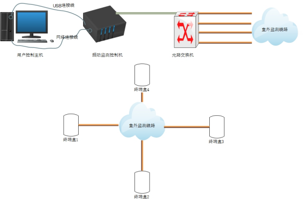
系统整体拓补图
《系统整体拓补图》描述了系统工作流程。室外分布4条传感光纤，它们负责监控现场振动信息，通过光路交换机与振动监测控制机相连。振动监测控制机又称为振动主机，它接收来自于光路交换机的光信号，现场的振动事件会使现场光纤发生细微的形变，从而影响其中的光信号。因此当有振动事件发生时，光信号中就包含了该振动事件。通过振动主机中的光电转换模块，可以将光信号转换为电信号，该电信号通过网络线传输到PC端，最终以文件的形式存储。通过解析文件，可以将原始信号转换成波形数据，将该数据输入已训练好的神经网络即可获得需要的输出结果。
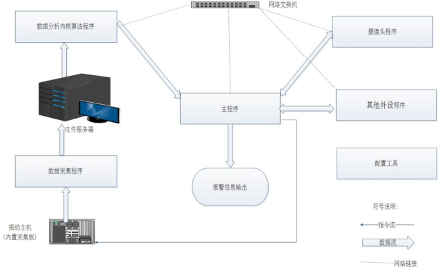
系统软件逻辑框图
《系统软件逻辑框图》描述了系统软件工作流程。振动主机是数据采集的硬件基础。它内置了一块数据采集板。通过数据采集板收集来自振动光纤的信号。采集板内置有一颗FPGA，该FPGA与运行在PC机上的数据采集程序通信，将采集来的数据按照约定的格式存放在PC上，由于是以文件的形式存放，因此该PC又可称为文件服务器。
存放在文件服务器上的文件可以称为数据文件，或波形文件。数据分析内核算法程序通过获取，解析这些文件，可以还原振动信号。数据分析内核算法程序从还原后的振动信号中识别出振动源，振动位置(也就振动发生的防区)后，将其发送到主程序，由主程序对外呈现和输出。
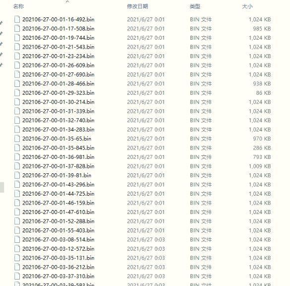
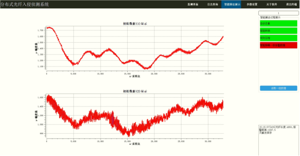
事件发生后，振动主机会产生报警数据，这些报警数据以波形文件的形式存储，并通过绘图软件以波形的方式显示在界面中，波形中携带了振动相关的信息。《波形文件图》为报警数据存储的文件形式， 《报警产生的波形数据图》为解析波形文件后，显示在界面上的波形图形。
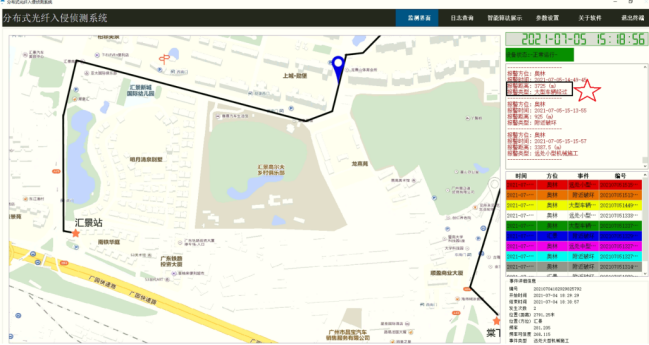
报警数据的输出
输出结果最终以图片及文字的形式通过主界面呈现。主要包含振动源和振动位置，如上图《报警数据的输出》红五星位置的框图。
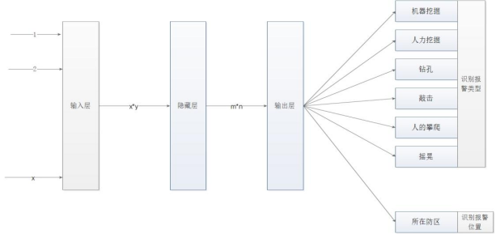
神经网络模型概况
通过以上振动系统的工作原理的运行逻辑可以看到，原始的振动数据为输入，振动源和振动位置为输出。它完全满足使用神经网络的条件，是一个典型的神经网络的应用场景。因此，我们将振动数据作为神经网络的输入层的输入，将振动类型和振动位置作为神经网络的输出层的输出结果，在中间配置好隐藏层即可搭建起神经网络的训练模型。
如上图“神经网络模型”，我们使用1到x的波形数据作为输入，在输入层和隐藏层之间建立x*y的映射关系，在隐藏层和输出层之间建立m*n的映射关系，最终输出我们需要的报警类型和报警位置数据。
神经网络模型分层
在神经网络模型中，信号由前到后逐层传递，当预测完成后，预测结果与实际测试结果进行差分，其差分结果再逐层向前传递，在该过程中实现权重和偏置参数的校准。该模型的这些特点符合我们项目的实际需求。因此，我们采用CNN神经网络实现入侵振动检测的深度学习，并使用训练后的结果进行事件识别。如下图《神经网络分层概览》， 神经网络基本构成有三层: 输入层， 隐藏层与输出层。它们的作用分别是：
² 输入层：接收原始数据，然后往隐层送
² 输出层：神经网络的决策输出
² 隐藏层：为神经网络的关键，相当于对数据做一次特征提取。隐藏层的意义，是把前一层的向量变成新的向量。就是坐标变换，即：把数据做平移，旋转，伸缩，扭曲，让数据变得线性可分。
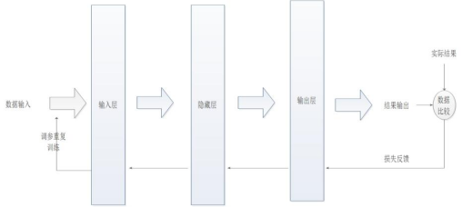
神经网络分层概览
根据实际情况，可以将中间层设计为多隐层， 参数由输层输入到隐层，由隐层传递到输出层，输出层向外界输出信息处理结果。各层均有大量互不相连的神经元组成，其中输入层神经元将输入的数据传递到隐藏层，再由隐藏层将数据激活放大后传递到输出层并由输出层输出，且同层神经元之间不能进行数据信息传递，即整体信号维持一个前向传递过程；当实际输出与期望值不相符时，就进入误差的反向传播（Back Propagation）阶段，误差通过输出层向隐藏层和输入层反向传回，按梯度下降的方式修改各层的权值及偏置量，不断周而复始这个循环（这也是神经网络学习训练的过程），调整相邻层神经元之间的连接权值和阀值，直到计算输出与期望输出的误差减少到目标范围内，或者循环次数达到了预设值，至此，学习过程完成。
神经网络模型中的神经元
神经网络模型图中的神经元如下图所示：
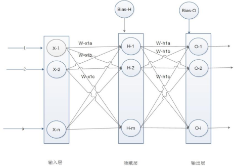
神经网络模型图中的神经元
上图中，每一个圆形框代表一个神经元， 每个神经元代表对数据的一次处理。 通过输入层输入训练数据， 通过输出层输出训练结果。
输入层中，X-1, X-2..... X-n 表示输入波形数据的n个属性值， W-x1a, W-x1b, W-x1c表示其对应的权重参数， Bais-H表示其对应的偏置参数；
隐藏层中, H-1, H-2..... H-m表示m个神经元的值，W-h1a, W-h1b, W-h1c表示其对应的权重参数， Bais-O表示其对应的偏置参数；
输出层中, O-1, O-2..... O-i表示i个输出神经元的值。
组成神经网络的，是若干个神经元， 神经元模型如《神经元模型图》：
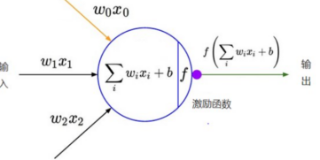
神经元模型图
图中w为权重，神经元之间的连接强度由权重表示，权重的大小表示可能性的大小；b为偏置参数是为了正确分类样本设置的重要参数，相当于加入一个常数；w 和b为计算提供了一个可控的输入修正。 f为激活函数。
神经元的输出与输入的函数关系为:
Ij=∑iWijXi + b
Oj=Relu(Ij)
公式中Wij表示神经元i与神经元j之间连接的权重，Oj代表神经元j的输出， Relu是激活函数，它是一个特殊的函数，用于将任意实数映射到(0，1)区间。
上文中的ReLu函数称为神经元的激活函数(activation function),ReLu是一个分段线性函数，其数学表达式为：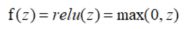。即：小于等于0则输出为0；大于0的则恒等输出。其特点是函数本身及其导数都是连续的，因而在处理上十分方便。其数学公式为： f(x)=max(0,x) 。相对于传统的sigmoid激活函数，ReLu激活函数的优势是：
sigmoid的正向传播有指数运算，而ReLu是线性输出；
反向传播中，sigmoid有指数运算，而ReLU有输出的部分(大于0的部分)导数始终为1；
ReLu没有梯度饱和问题；
Relu会使一部分神经元的输出为0，这样就形成了网络的稀疏性，并且减少了参数的相互依存关系，有利于缓解过拟合问题的发生。
ReLu函数曲线如图《ReLu function》所示。该函数可以完成训练的神经网络处理回归问题。
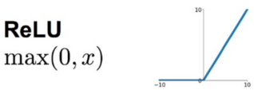
信号采用正向传播（或称前向传播）方式，即：输入层各神经元负责接收来自外界的输入信息（参数），并传递给中间层（隐藏层）各神经元；由输出层向外界输出信息处理结果。
信号的传播与上面的神经元模型图所讲的一样。都是图中从左往右的方式传播。
误差采用反向传播方式，即：（1）计算实际输出与相应的理想输出的差； （2）按极小化误差的方式调整权矩阵。周而复始的循环这两个步骤，不断调整各层权值，完成神经网络学习训练。此过程一直持续进行，直到网络输出的误差，即损失函数减少到可接受的程度为止。
如下《误差采用反向传播示意图》1和2，当信号正向传播结束后，我们最终得到一个被称为预测值的输出值。为了计算误差，我们将预测值与实际测试取样的输出值进行比较。我们使用损失函数来计算误差值。然后对神经网络中每一个误差值求导，并计算每一个神经元对应的权重。由于有若干层和若干神经元，因此损失函数和神经元权重，偏置之间的映射关系表现为复合函数的关系，所以反向传播使用微积分中的链式法则，在链式法则中，首先计算对应最后一层权值的误差值的导数。这些导数也称梯度，然后使用这些梯度值来计算倒数第二层的梯度。重复此过程，直到我们得到神经网络中每个权重的梯度。然后从权值中减去该梯度值，以减少误差值。这样，就逐步获得了网络的最小损失函数。
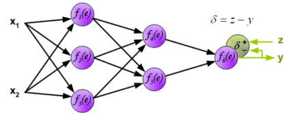
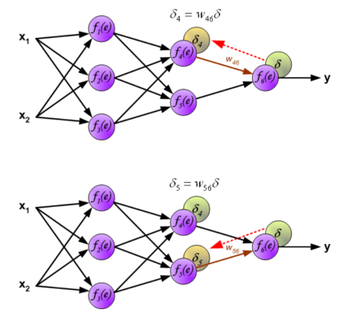
对于神经网络的训练就是不断的修改权值w和偏置项b的值(修改网络中的参数)从而使模型的表现与训练分布更加拟合,在损失函数确定的情况下,通过梯度下降算法来更新优化参数。将样本数据的输入作为已知值,将要更新的权值w和偏置项b作为自变量,误差L(真实值与预测值结果的偏差)是权值w和偏置项b的函数。修改最终达到的结果是，误差L的值取最小值。此时对应的权值w和偏置项b就是训练所需要的结果。
梯度下降的迭代公式为：
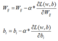
其中,α代表学习率,w，b分别代表权重和偏置项，L(w,b)表示损失函数,在输入样本确定的情况下,损失函数L与w和b有关, 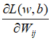表示损失函数对权值w的偏导数, 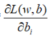表示损失函数对偏置项b的偏导数。
若误差L变小,可以让自变量减去该方向上的梯度, 对于该梯度设置一个学习率(也称步长，学习率应事先指定一个较小值)。当梯度小于0时,参数值增大;当梯度大于0时,参数值减小。循环迭代该过程,当损失值最小时,此时的参数值就对应最优解。由此得到训练结果。
AlexNet是Alex Krizhevsky提出的深度卷积神经网络，它是LeNet一种更深更宽的版本。在AlexNet上首次应用了几个技术点：ReLU、Dropout和LRN。AlexNet包含了6亿3000万个连接，6000万个参数和65万个神经元，有5个卷积层，3个全连接层。在ILSVRC 2012比赛中，AlexNet以top-5的错误率为16.4%的显著优势夺得冠军，第二名的成绩是26.2%。AlexNet主要使用的技术点包括：
1、成功使用RELU作为CNN的激活函数，并验证其效果在较深的网络中的效果超过了sigmoid，解决了sigmoid在深层的网络中的梯度弥散的问题。
2、使用Dropout来随机使得一部分神经元失活，来避免模型的过拟合，在AlexNet中，dropout主要应用在全连接层。
3、使用重叠的最大池化，以前在卷积神经网络中大部分都采用平均池化，在AlexNet中都是使用最大池化，最大池化可以避免平均池化的模糊化效果。重叠的最大池化是指卷积核的尺寸要大于步长，这样池化层的输出之间会有重叠和覆盖，提升特征的丰富性。在AlexNet中使用的卷积核大小为3×3，横向和纵向的步长都为2。
4、使用LRN层，对局部神经元的活动创建有竞争机制，让响应较大的值变得相对更大，并抑制反馈较小的神经元，来增强模型的泛化能力。
5、数据增强，随机从256*256的原始图像中随机截取224*224大小的区域（并进行水平翻转）这个操作相当于把数据量曾加了（256-224）*（256*224）*2倍=2048倍。如果没有数据增强，只靠原始的数据量，众多的参数会陷入过拟合中。使用数据增强同业可以提高泛化能力。
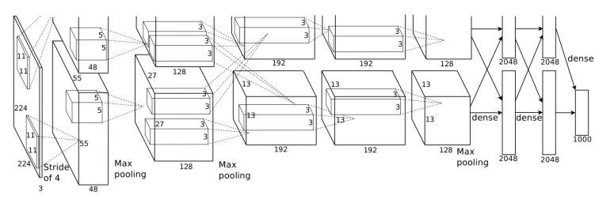
AlexNet网络结构图
AlexNet由8层神经网络层组成，它们的处理流程及名称为： 输入->卷积层1（卷积->ReLU->池化->LRN）->卷积层2（卷积->ReLU->池化->LRN）->卷积层3（卷积->ReLU）->卷积层4（卷积->ReLU）->卷积层5（卷积->ReLU->池化）->全连接层1（全连接->ReLU->Dropout）->全连接层2（全连接->ReLU->Dropout）->全连接层3（全连接->Softmax）->输出。
TensorFlow™是一个基于数据流编程（dataflow programming）的符号数学系统，被广泛应用于各类机器学习（machine learning）算法的编程实现，其前身是谷歌的神经网络算法库DistBelief。它拥有多层级结构，可部署于各类服务器、PC终端和网页并支持GPU和TPU高性能数值计算，被广泛应用于谷歌内部的产品开发和各领域的科学研究，由谷歌人工智能团队谷歌大脑（Google Brain）开发和维护，拥有包括TensorFlow Hub、TensorFlow Lite、TensorFlow Research Cloud在内的多个项目以及各类应用程序接口（Application Programming Interface, API）。自2015年11月9日起，TensorFlow依据阿帕奇授权协议（Apache 2.0 open source license）开放源代码。
与近年主流的TensorFlow1.0和PyTorch相比，TensorFlow2.0有以下特点：
TensorFlow有一套Tensorboard配套库，能跟踪运行，可视化算图、模型等丰富功能。（PyTorch使用visdom，没有Tensorboard方便实用）
像写Python程序一样设计神经网络。（不需要TensorFlow1.0的复杂机制）
可以直接使用TensorFlow serving 在TensorFlow中部署模型，这是一种使用了REST Client API的框架。（而PyTorch的部署需要借助Django或者Flask这样的PythonWeb框架）
由上可见，TensorFlow2.0框架和AlexNet神经网络在工业界表现优异，而我们项目又在原理上完全符合使用神经网络方案的条件，因此，项目选择了TensorFlow2.0框架加AlexNet神经网络的组合方式对数据进行训练和使用。
数据集采用历史数据，每个通道中的每个类别使用已经确定好的10000例数据，一共6个类别，即：每个通道训练数据为60000条。该数据集都是以往历史真实数据。它们是通过测试，重现室外现场挖掘，钻孔，敲击等典型场景活动，由振动主机中安装的高灵敏度，高速率的数据采集卡获得。该数据形成数据文件后，结合测试现场的激励表可以准确地预知每个数据文件和现场的活动对应关系。
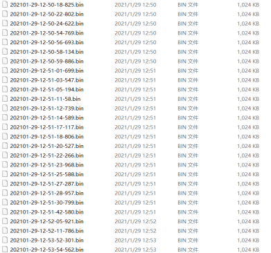
训练集 | 测试集 | 验证集 | 共计 | |
数据条目 | 38400 | 9600 | 12000 | 60000 |
占比 | 64% | 16% | 20% | 100% |
如《数据比例分配表》，采用神经网络通用的经验值的比例：按照2:8划分的原则，验证集中的数据占总比 20%； 剩下的数据中，再次按照2:8的原则，抽取20%作为测试集，剩余的作为训练集数据。
训练方式和过程
下图《训练数据采集和训练流程》为数据采集和训练流程示意图。振动主机内置数据采集卡， FPGA为数据采集卡上的采集控制芯片。数据采集卡通过FPGA实现的数据AD转换，FPGA和安装在PC端的上位机软件通信，将采集到的AD转换数据转发给上位机软件，上位机软件收到数据后，将这些数据以文件的形式保存进数据池。该高速采集卡产生数据文件的速率为1帧数据/每秒。1帧数据中，包含了各个采集通道的数据。使用时，通过预定的解析协议，将其解析到各个通道的缓存器中，并从缓存器中获得神经网络所需的输入。
在采集数据期间，数据分析内核算法程序等程序并不启动运行。数据池中保存测试产生的海量数据，将这些测试数据按照一定的比例（下文有描述这些比例）分成训练集，测试集，验证集，将这些分类好的数据输入到AlexNet神经网络分别进行训练，测试，验证，最终得到期望的训练结果，它们以文件的形式保存起来，以便在需要时再导入。黄色方框为对输入数据进行训练的位置。
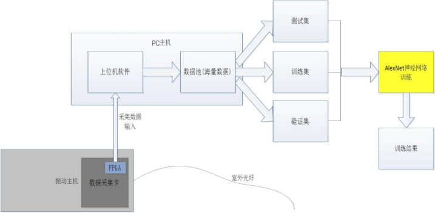
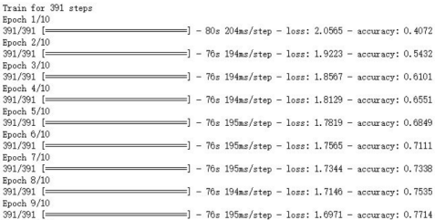
如上图《AlexNet训练过程》，通过反复训练，损失函数不断降低，输出准确率不断提升。训练集中的训练次数--准确率对应关系如下表：
训练次数 | 损失函数 | 准确率 |
1 | 2.16 | 41% |
2 | 1.92 | 54% |
3 | 1.86 | 61% |
4 | 1.81 | 66% |
5 | 1.78 | 68% |
6 | 1.76 | 71% |
7 | 1.73 | 73% |
8 | 1.71 | 75% |
9 | 1.69 | 77% |
训练次数--损失函数对应关系用图示方式如下图：
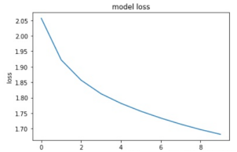
在流程《训练数据采集和训练流程》中，可以获得训练结果，该训练结果以文件的形式保存。在软件实际运行中，需要导入该结果使用。下图《训练数据使用流程》说明了使用该训练结果的过程。
数据分析内核算法程序在初始化后，会加载TensorFlow2.0框架和相应的API，然后加载这些以文件形式保存的训练结果。
训练数据使用流程与《训练数据采集和训练流程》相同，但不同的是，数据池中并非保持海量数据，而是维持着1帧数据，该数据为室外光纤产生的实时数据，使用完毕就会转移出数据池。当数据池中的采集数据就绪后，会被数据分析内核算法程序读取，并作为输入交由TensorFlow2.0 API分析。由于已在此之前加载了已有的训练结果，因此TensorFlow2.0 API分析的过程实质上就是利用已有的训练结果对新产生的数据进行分析，处理。流程结束后，就得到了振动检测结果。从上述流程中可以看到，该结果的输出是利用了已有的AlexNet神经网络训练结果，以及TensorFlow2.0 框架中的API。《训练数据使用流程》中黄色方框为调用TensorFlow2.0 API的位置，这里负责对数据进行分析并输出结果。
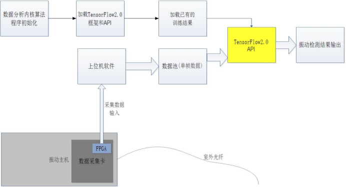
通过多次现场实践，该神经网络算法对于预测和判断非法入侵准确率高，速度快，性能指标优于传统算法。
下图《项目识别效果》为验证集中使用的现场数据识别情况。可以看到验证集12000条验证数据中，可以准确识别出11976条，准确率为99.8%。 由于振动检测系统身处室外，工况比较复杂，干扰多，底噪相应地受到环境影响比较大。自然界中的各种因素综合在一起，有时也能短暂地模拟出类似于人类破坏近似的振动波形，这些振动波形对于识别具有很大的欺骗性。因此存在一定概览的误判也是合理情况。同时，在实践过程中，真正的侵害发生时往往会出现连续的，多次的侵害信号，而不是单一的，瞬间的冲击。因此，即便偶尔一次小概率出现误判为不识别或误识别，也能通过后续的信号弥补。
综上，0.2%的错误率可以容忍，且在实际工况中只会更低，几乎不会影响到侵害判别。
验证条目 | 准确识别 | 准确率 | 误识别 | 错误率 | |
TensorFlow2.0结合AlexNet的深度学习方案 | 12000 | 11976 | 99.8% | 24 | 0.2% |
BP网络全称Back Propagation Neural Network，是1986年由Rumelhart和McCelland为首的科学家小组提出，是一种按误差逆传播算法训练的多层前馈网络。是一种有监督式的学习算法。它的学习规则是使用最速下降法，通过反向传播来不断调整网络的权值和阈值，使网络的误差平方和最小。
又称Neural Network，是一种数学模型，是存在于计算机的神经系统，由大量的神经元相连接并进行计算，在外界信息的基础上，改变内部的结构，常用来对输入和输出间复杂的关系进行建模。神经网络由大量的节点和之间的联系构成，负责传递信息和加工信息，神经元也可以通过训练而被强化。
全称Convolutional Neural Networks, 缩写CNN，是一类包含卷积计算且具有深度结构的前馈神经网络（Feedforward Neural Networks），是深度学习（deep learning）的代表算法之一。卷积神经网络具有表征学习（representation learning）能力，能够按其阶层结构对输入信息进行平移不变分类（shift-invariant classification），因此也被称为“平移不变人工神经网络（Shift-Invariant Artificial Neural Networks, SIANN）
英文Neural ，为神经网络中的基本单元。又称“单元”（unit），“节点”（node）。
英文：Supervised learning，是一个深度学习中的方法，可以由训练资料中学到或建立一个模式（函数 / learning model），并依此模式推测新的实例。训练资料是由输入物件（通常是向量）和预期输出所组成。函数的输出可以是一个连续的值（称为回归分析），或是预测一个分类标签（称作分类）。
learning rate，也称步长，学习速率。为在每次迭代过程中对成本函数的最小化次数。
Tensor，任意维度的数据。
发出操控命令的计算机。即运行主程序的电脑。
直接控制设备获取设备状况的计算机或单片机，即振动主机。
防区，指防务区段，防守的区域。是能区分报警事件的最小空间单位。
Ahmed, A., Aly, M., Gonzalez, J., Narayanamurthy, S., & Smola, A. J. (2012). Scalable inference in
latent variable models. Proceedings of the fifth ACM international conference on Web search and data
mining (pp. 123�C132).
Aji, S. M., & McEliece, R. J. (2000). The generalized distributive law.IEEE transactions on Information
Theory, 46(2), 325�C343.
Ba, J. L., Kiros, J. R., & Hinton, G. E. (2016). Layer normalization. arXiv preprint arXiv:1607.06450.
Bahdanau, D., Cho, K., & Bengio, Y. (2014). Neural machine translation by jointly learning to align
and translate. arXiv preprint arXiv:1409.0473.
Bay, H., Tuytelaars, T., & Van Gool, L. (2006). Surf: speeded up robust features. European conference
on computer vision (pp. 404�C417).
Bengio, Y., Ducharme, R., Vincent, P., & Jauvin, C. (2003). A neural probabilistic language model.
Journal of machine learning research, 3(Feb), 1137�C1155.
Bishop, C. M. (1995). Training with noise is equivalent to tikhonov regularization. Neural computation, 7(1), 108�C116.
Bishop, C. M. (2006). Pattern recognition and machine learning. springer.
Bojanowski, P., Grave, E., Joulin, A., & Mikolov, T. (2017). Enriching word vectors with subword
information. Transactions of the Association for Computational Linguistics, 5, 135�C146.
Bollobás, B. (1999). Linear analysis. Cambridge University Press, Cambridge.
Bowman, S. R., Angeli, G., Potts, C., & Manning, C. D. (2015). A large annotated corpus for learning
natural language inference. arXiv preprint arXiv:1508.05326.
Boyd, S., & Vandenberghe, L. (2004). Convex Optimization. Cambridge, England: Cambridge University Press.
Brown, N., & Sandholm, T. (2017). Libratus: the superhuman ai for no-limit poker.IJCAI (pp. 5226�C
5228).
Brown, P. F., Cocke, J., Della Pietra, S. A., Della Pietra, V. J., Jelinek, F., Lafferty, J., … Roossin, P. S.
(1990). A statistical approach to machine translation. Computational linguistics, 16(2), 79�C85.
Brown, P. F., Cocke, J., Della Pietra, S. A., Della Pietra, V. J., Jelinek, F., Mercer, R. L., & Roossin,
P. (1988). A statistical approach to language translation. Coling Budapest 1988 Volume 1: International Conference on Computational Linguistics.
Campbell, M., Hoane Jr, A. J., & Hsu, F.-h. (2002). Deep blue. Artificial intelligence, 134(1-2), 57�C83.
Canny, J. (1987). A computational approach to edge detection. Readings in computer vision (pp. 184�C
203). Elsevier.
989
Cer, D., Diab, M., Agirre, E., Lopez-Gazpio, I., & Specia, L. (2017). Semeval-2017 task 1: semantic textual similarity multilingual and crosslingual focused evaluation. Proceedings of the 11th
International Workshop on Semantic Evaluation (SemEval-2017) (pp. 1�C14).
Cheng, J., Dong, L., & Lapata, M. (2016). Long short-term memory-networks for machine reading.
Proceedings of the 2016 Conference on Empirical Methods in Natural Language Processing (pp. 551�C
561).
Cho, K., Van Merriënboer, B., Bahdanau, D., & Bengio, Y. (2014). On the properties of neural machine translation: encoder-decoder approaches. arXiv preprint arXiv:1409.1259.
Cho, K., Van Merriënboer, B., Gulcehre, C., Bahdanau, D., Bougares, F., Schwenk, H., & Bengio,
Y. (2014). Learning phrase representations using rnn encoder-decoder for statistical machine
translation. arXiv preprint arXiv:1406.1078.
Chung, J., Gulcehre, C., Cho, K., & Bengio, Y. (2014). Empirical evaluation of gated recurrent neural networks on sequence modeling. arXiv preprint arXiv:1412.3555.
Csiszár, I. (2008). Axiomatic characterizations of information measures. Entropy, 10(3), 261�C273.
Dalal, N., & Triggs, B. (2005). Histograms of oriented gradients for human detection. 2005 IEEE
computer society conference on computer vision and pattern recognition (CVPR’05) (pp. 886�C893).
De Cock, D. (2011). Ames, iowa: alternative to the boston housing data as an end of semester
regression project. Journal of Statistics Education, 19(3).
DeCandia, G., Hastorun, D., Jampani, M., Kakulapati, G., Lakshman, A., Pilchin, A., … Vogels, W.
(2007). Dynamo: amazonʼs highly available key-value store. ACM SIGOPS operating systems review
(pp. 205�C220).
Devlin, J., Chang, M.-W., Lee, K., & Toutanova, K. (2018). Bert: pre-training of deep bidirectional
transformers for language understanding. arXiv preprint arXiv:1810.04805.
Dosovitskiy, A., Beyer, L., Kolesnikov, A., Weissenborn, D., Zhai, X., Unterthiner, T., … others.
(2021). An image is worth 16x16 words: transformers for image recognition at scale. International Conference on Learning Representations.
Doucet, A., De Freitas, N., & Gordon, N. (2001). An introduction to sequential monte carlo methods. Sequential Monte Carlo methods in practice (pp. 3�C14). Springer.
Duchi, J., Hazan, E., & Singer, Y. (2011). Adaptive subgradient methods for online learning and
stochastic optimization. Journal of Machine Learning Research, 12(Jul), 2121�C2159.
Dumoulin, V., & Visin, F. (2016). A guide to convolution arithmetic for deep learning. arXiv preprint
arXiv:1603.07285.
Flammarion, N., & Bach, F. (2015). From averaging to acceleration, there is only a step-size. Conference on Learning Theory (pp. 658�C695).
Gatys, L. A., Ecker, A. S., & Bethge, M. (2016). Image style transfer using convolutional neural
networks. Proceedings of the IEEE conference on computer vision and pattern recognition (pp. 2414�C
2423).
Ginibre, J. (1965). Statistical ensembles of complex, quaternion, and real matrices. Journal of
Mathematical Physics, 6(3), 440�C449.
Girshick, R. (2015). Fast r-cnn. Proceedings of the IEEE international conference on computer vision
(pp. 1440�C1448).
990
Girshick, R., Donahue, J., Darrell, T., & Malik, J. (2014). Rich feature hierarchies for accurate object
detection and semantic segmentation. Proceedings of the IEEE conference on computer vision and
pattern recognition (pp. 580�C587).
Glorot, X., & Bengio, Y. (2010). Understanding the difficulty of training deep feedforward neural
networks. Proceedings of the thirteenth international conference on artificial intelligence and statistics
(pp. 249�C256).
Goh, G. (2017). Why momentum really works. Distill. URL: http://distill.pub/2017/momentum,
doi:10.23915/distill.00006285
Goldberg, D., Nichols, D., Oki, B. M., & Terry, D. (1992). Using collaborative filtering to weave an
information tapestry. Communications of the ACM, 35(12), 61�C71.
Goodfellow, I., Bengio, Y., & Courville, A. (2016). Deep Learning. MIT Press.
http://www.deeplearningbook.org.
Goodfellow, I., Pouget-Abadie, J., Mirza, M., Xu, B., Warde-Farley, D., Ozair, S., … Bengio, Y. (2014).
Generative adversarial nets. Advances in neural information processing systems (pp. 2672�C2680).
Gotmare, A., Keskar, N. S., Xiong, C., & Socher, R. (2018). A closer look at deep learning heuristics:
learning rate restarts, warmup and distillation. arXiv preprint arXiv:1810.13243.
Graves, A. (2013). Generating sequences with recurrent neural networks. arXiv preprint
arXiv:1308.0850.
Graves, A., & Schmidhuber, J. (2005). Framewise phoneme classification with bidirectional lstm
and other neural network architectures. Neural networks, 18(5-6), 602�C610.
Gunawardana, A., & Shani, G. (2015). Evaluating recommender systems. Recommender systems
handbook (pp. 265�C308). Springer.
Guo, H., Tang, R., Ye, Y., Li, Z., & He, X. (2017). Deepfm: a factorization-machine based neural network for ctr prediction. Proceedings of the 26th International Joint Conference on Artificial
Intelligence (pp. 1725�C1731).
Hadjis, S., Zhang, C., Mitliagkas, I., Iter, D., & Ré, C. (2016). Omnivore: an optimizer for multidevice deep learning on cpus and gpus. arXiv preprint arXiv:1606.04487.
Hazan, E., Rakhlin, A., & Bartlett, P. L. (2008). Adaptive online gradient descent. Advances in Neural
Information Processing Systems (pp. 65�C72).
He, K., Gkioxari, G., Dollár, P., & Girshick, R. (2017). Mask r-cnn. Proceedings of the IEEE international conference on computer vision (pp. 2961�C2969).
He, K., Zhang, X., Ren, S., & Sun, J. (2015). Delving deep into rectifiers: surpassing human-level
performance on imagenet classification. Proceedings of the IEEE international conference on computer vision (pp. 1026�C1034).
He, K., Zhang, X., Ren, S., & Sun, J. (2016). Deep residual learning for image recognition. Proceedings of the IEEE conference on computer vision and pattern recognition (pp. 770�C778).
He, K., Zhang, X., Ren, S., & Sun, J. (2016). Identity mappings in deep residual networks. European
conference on computer vision (pp. 630�C645).
He, X., & Chua, T.-S. (2017). Neural factorization machines for sparse predictive analytics. Proceedings of the 40th International ACM SIGIR conference on Research and Development in Information
Retrieval (pp. 355�C364).
https://doi.org/10.23915/distill.00006
He, X., Liao, L., Zhang, H., Nie, L., Hu, X., & Chua, T.-S. (2017). Neural collaborative filtering.
Proceedings of the 26th international conference on world wide web (pp. 173�C182).
Hebb, D. O., & Hebb, D. (1949). The organization of behavior. Vol. 65. Wiley New York.
Hendrycks, D., & Gimpel, K. (2016). Gaussian error linear units (gelus). arXiv preprint
arXiv:1606.08415.
Hennessy, J. L., & Patterson, D. A. (2011). Computer architecture: a quantitative approach. Elsevier.
Herlocker, J. L., Konstan, J. A., Borchers, A., & Riedl, J. (1999). An algorithmic framework for
performing collaborative filtering. 22nd Annual International ACM SIGIR Conference on Research
and Development in Information Retrieval, SIGIR 1999 (pp. 230�C237).
Hidasi, B., Karatzoglou, A., Baltrunas, L., & Tikk, D. (2015). Session-based recommendations with
recurrent neural networks. arXiv preprint arXiv:1511.06939.
Hochreiter, S., Bengio, Y., Frasconi, P., Schmidhuber, J., & others (2001). Gradient flow in recurrent
nets: the difficulty of learning long-term dependencies.
Hochreiter, S., & Schmidhuber, J. (1997). Long short-term memory. Neural computation, 9(8), 1735�C
1780.
Hoyer, P. O., Janzing, D., Mooij, J. M., Peters, J., & Schölkopf, B. (2009). Nonlinear causal discovery
with additive noise models. Advances in neural information processing systems (pp. 689�C696).
Hu, J., Shen, L., & Sun, G. (2018). Squeeze-and-excitation networks. Proceedings of the IEEE conference on computer vision and pattern recognition (pp. 7132�C7141).
Hu, Y., Koren, Y., & Volinsky, C. (2008). Collaborative filtering for implicit feedback datasets. 2008
Eighth IEEE International Conference on Data Mining (pp. 263�C272).
Hu, Z., Lee, R. K.-W., & Aggarwal, C. C. (2020). Text style transfer: a review and experiment evaluation. arXiv preprint arXiv:2010.12742.
Huang, G., Liu, Z., Van Der Maaten, L., & Weinberger, K. Q. (2017). Densely connected convolutional networks. Proceedings of the IEEE conference on computer vision and pattern recognition
(pp. 4700�C4708).
Ioffe, S. (2017). Batch renormalization: towards reducing minibatch dependence in batchnormalized models. Advances in neural information processing systems (pp. 1945�C1953).
Ioffe, S., & Szegedy, C. (2015). Batch normalization: accelerating deep network training by reducing internal covariate shift. arXiv preprint arXiv:1502.03167.
Izmailov, P., Podoprikhin, D., Garipov, T., Vetrov, D., & Wilson, A. G. (2018). Averaging weights
leads to wider optima and better generalization. arXiv preprint arXiv:1803.05407.
Jaeger, H. (2002). Tutorial on training recurrent neural networks, covering BPPT, RTRL, EKF and the”
echo state network” approach. Vol. 5. GMD-Forschungszentrum Informationstechnik Bonn.
James, W. (2007). The principles of psychology. Vol. 1. Cosimo, Inc.
Jia, X., Song, S., He, W., Wang, Y., Rong, H., Zhou, F., … others. (2018). Highly scalable deep learning training system with mixed-precision: training imagenet in four minutes. arXiv preprint
arXiv:1807.11205.
Jouppi, N. P., Young, C., Patil, N., Patterson, D., Agrawal, G., Bajwa, R., … others. (2017). Indatacenter performance analysis of a tensor processing unit. 2017 ACM/IEEE 44th Annual International Symposium on Computer Architecture (ISCA) (pp. 1�C12).
992
Karras, T., Aila, T., Laine, S., & Lehtinen, J. (2017). Progressive growing of gans for improved
quality, stability, and variation. arXiv preprint arXiv:1710.10196.
Kim, Y. (2014). Convolutional neural networks for sentence classification. arXiv preprint
arXiv:1408.5882.
Kingma, D. P., & Ba, J. (2014). Adam: a method for stochastic optimization. arXiv preprint
arXiv:1412.6980.
Koller, D., & Friedman, N. (2009). Probabilistic graphical models: principles and techniques. MIT press.
Kolter, Z. (2008). Linear algebra review and reference. Available online: http.
Koren, Y. (2009). Collaborative filtering with temporal dynamics. Proceedings of the 15th ACM
SIGKDD international conference on Knowledge discovery and data mining (pp. 447�C456).
Koren, Y., Bell, R., & Volinsky, C. (2009). Matrix factorization techniques for recommender systems. Computer, pp. 30�C37.
Krizhevsky, A., Sutskever, I., & Hinton, G. E. (2012). Imagenet classification with deep convolutional neural networks. Advances in neural information processing systems (pp. 1097�C1105).
Kung, S. Y. (1988). Vlsi array processors. Englewood Cliffs, NJ, Prentice Hall, 1988, 685 p. Research
supported by the Semiconductor Research Corp., SDIO, NSF, and US Navy.
LeCun, Y., Bottou, L., Bengio, Y., Haffner, P., & others. (1998). Gradient-based learning applied to
document recognition. Proceedings of the IEEE, 86(11), 2278�C2324.
Li, M. (2017). Scaling Distributed Machine Learning with System and Algorithm Co-design (Doctoral
dissertation). PhD Thesis, CMU.
Li, M., Andersen, D. G., Park, J. W., Smola, A. J., Ahmed, A., Josifovski, V., … Su, B.-Y. (2014).
Scaling distributed machine learning with the parameter server. 11th $\$USENIX$\$ Symposium
on Operating Systems Design and Implementation ($\$OSDI$\$ 14) (pp. 583�C598).
Lin, M., Chen, Q., & Yan, S. (2013). Network in network. arXiv preprint arXiv:1312.4400.
Lin, T.-Y., Goyal, P., Girshick, R., He, K., & Dollár, P. (2017). Focal loss for dense object detection.
Proceedings of the IEEE international conference on computer vision (pp. 2980�C2988).
Lin, Y., Lv, F., Zhu, S., Yang, M., Cour, T., Yu, K., … others. (2010). Imagenet classification: fast
descriptor coding and large-scale svm training. Large scale visual recognition challenge.
Lin, Z., Feng, M., Santos, C. N. d., Yu, M., Xiang, B., Zhou, B., & Bengio, Y. (2017). A structured
self-attentive sentence embedding. arXiv preprint arXiv:1703.03130.
Lipton, Z. C., & Steinhardt, J. (2018). Troubling trends in machine learning scholarship. arXiv
preprint arXiv:1807.03341.
Liu, W., Anguelov, D., Erhan, D., Szegedy, C., Reed, S., Fu, C.-Y., & Berg, A. C. (2016). Ssd: single
shot multibox detector. European conference on computer vision (pp. 21�C37).
Liu, Y., Ott, M., Goyal, N., Du, J., Joshi, M., Chen, D., … Stoyanov, V. (2019). Roberta: a robustly
optimized bert pretraining approach. arXiv preprint arXiv:1907.11692.
Long, J., Shelhamer, E., & Darrell, T. (2015). Fully convolutional networks for semantic segmentation. Proceedings of the IEEE conference on computer vision and pattern recognition (pp. 3431�C3440).
Loshchilov, I., & Hutter, F. (2016). Sgdr: stochastic gradient descent with warm restarts. arXiv
preprint arXiv:1608.03983.
Lowe, D. G. (2004). Distinctive image features from scale-invariant keypoints. International journal
of computer vision, 60(2), 91�C110.
Luo, P., Wang, X., Shao, W., & Peng, Z. (2018). Towards understanding regularization in batch
normalization. arXiv preprint.
Maas, A. L., Daly, R. E., Pham, P. T., Huang, D., Ng, A. Y., & Potts, C. (2011). Learning word vectors
for sentiment analysis. Proceedings of the 49th annual meeting of the association for computational
linguistics: Human language technologies-volume 1 (pp. 142�C150).
McCann, B., Bradbury, J., Xiong, C., & Socher, R. (2017). Learned in translation: contextualized
word vectors. Advances in Neural Information Processing Systems (pp. 6294�C6305).
McCulloch, W. S., & Pitts, W. (1943). A logical calculus of the ideas immanent in nervous activity.
The bulletin of mathematical biophysics, 5(4), 115�C133.
McMahan, H. B., Holt, G., Sculley, D., Young, M., Ebner, D., Grady, J., … others. (2013). Ad click
prediction: a view from the trenches. Proceedings of the 19th ACM SIGKDD international conference
on Knowledge discovery and data mining (pp. 1222�C1230).
Merity, S., Xiong, C., Bradbury, J., & Socher, R. (2016). Pointer sentinel mixture models. arXiv
preprint arXiv:1609.07843.
Mikolov, T., Chen, K., Corrado, G., & Dean, J. (2013). Efficient estimation of word representations
in vector space. arXiv preprint arXiv:1301.3781.
Mikolov, T., Sutskever, I., Chen, K., Corrado, G. S., & Dean, J. (2013). Distributed representations of
words and phrases and their compositionality. Advances in neural information processing systems
(pp. 3111�C3119).
Mirhoseini, A., Pham, H., Le, Q. V., Steiner, B., Larsen, R., Zhou, Y., … Dean, J. (2017). Device
placement optimization with reinforcement learning. Proceedings of the 34th International Conference on Machine Learning-Volume 70 (pp. 2430�C2439).
Mnih, V., Heess, N., Graves, A., & others. (2014). Recurrent models of visual attention. Advances in
neural information processing systems (pp. 2204�C2212).
Morey, R. D., Hoekstra, R., Rouder, J. N., Lee, M. D., & Wagenmakers, E.-J. (2016). The fallacy of
placing confidence in confidence intervals. Psychonomic bulletin & review, 23(1), 103�C123.
Nadaraya, E. A. (1964). On estimating regression. Theory of Probability & Its Applications, 9(1), 141�C
142.
Nesterov, Y., & Vial, J.-P. (2000). Confidence level solutions for stochastic programming, Stochastic Programming E-Print Series.
Nesterov, Y. (2018). Lectures on convex optimization. Vol. 137. Springer.
Neyman, J. (1937). Outline of a theory of statistical estimation based on the classical theory of
probability. Philosophical Transactions of the Royal Society of London. Series A, Mathematical and
Physical Sciences, 236(767), 333�C380.
Papineni, K., Roukos, S., Ward, T., & Zhu, W.-J. (2002). Bleu: a method for automatic evaluation of
machine translation. Proceedings of the 40th annual meeting of the Association for Computational
Linguistics (pp. 311�C318).
Parikh, A. P., Täckström, O., Das, D., & Uszkoreit, J. (2016). A decomposable attention model for
natural language inference. arXiv preprint arXiv:1606.01933.
994
Park, T., Liu, M.-Y., Wang, T.-C., & Zhu, J.-Y. (2019). Semantic image synthesis with spatiallyadaptive normalization. Proceedings of the IEEE Conference on Computer Vision and Pattern Recognition (pp. 2337�C2346).
Paulus, R., Xiong, C., & Socher, R. (2017). A deep reinforced model for abstractive summarization.
arXiv preprint arXiv:1705.04304.
Pennington, J., Schoenholz, S., & Ganguli, S. (2017). Resurrecting the sigmoid in deep learning
through dynamical isometry: theory and practice. Advances in neural information processing systems (pp. 4785�C4795).
Pennington, J., Socher, R., & Manning, C. (2014). Glove: global vectors for word representation.
Proceedings of the 2014 conference on empirical methods in natural language processing (EMNLP)
(pp. 1532�C1543).
Peters, J., Janzing, D., & Schölkopf, B. (2017). Elements of causal inference: foundations and learning
algorithms. MIT press.
Peters, M., Ammar, W., Bhagavatula, C., & Power, R. (2017). Semi-supervised sequence tagging
with bidirectional language models. Proceedings of the 55th Annual Meeting of the Association for
Computational Linguistics (Volume 1: Long Papers) (pp. 1756�C1765).
Peters, M., Neumann, M., Iyyer, M., Gardner, M., Clark, C., Lee, K., & Zettlemoyer, L. (2018). Deep
contextualized word representations. Proceedings of the 2018 Conference of the North American
Chapter of the Association for Computational Linguistics: Human Language Technologies, Volume 1
(Long Papers) (pp. 2227�C2237).
Petersen, K. B., Pedersen, M. S., & others. (2008). The matrix cookbook. Technical University of
Denmark, 7(15), 510.
Polyak, B. T. (1964). Some methods of speeding up the convergence of iteration methods. USSR
Computational Mathematics and Mathematical Physics, 4(5), 1�C17.
Quadrana, M., Cremonesi, P., & Jannach, D. (2018). Sequence-aware recommender systems. ACM
Computing Surveys (CSUR), 51(4), 66.
Radford, A., Metz, L., & Chintala, S. (2015). Unsupervised representation learning with deep convolutional generative adversarial networks. arXiv preprint arXiv:1511.06434.
Radford, A., Narasimhan, K., Salimans, T., & Sutskever, I. (2018). Improving language understanding by generative pre-training. OpenAI.
Radford, A., Wu, J., Child, R., Luan, D., Amodei, D., & Sutskever, I. (2019). Language models are
unsupervised multitask learners. OpenAI Blog, 1(8), 9.
Rajpurkar, P., Zhang, J., Lopyrev, K., & Liang, P. (2016). Squad: 100,000+ questions for machine
comprehension of text. arXiv preprint arXiv:1606.05250.
Reddi, S. J., Kale, S., & Kumar, S. (2019). On the convergence of adam and beyond. arXiv preprint
arXiv:1904.09237.
Reed, S., & De Freitas, N. (2015). Neural programmer-interpreters. arXiv preprint arXiv:1511.06279.
Ren, S., He, K., Girshick, R., & Sun, J. (2015). Faster r-cnn: towards real-time object detection with
region proposal networks. Advances in neural information processing systems (pp. 91�C99).
Rendle, S. (2010). Factorization machines. 2010 IEEE International Conference on Data Mining
(pp. 995�C1000).
995
Rendle, S., Freudenthaler, C., Gantner, Z., & Schmidt-Thieme, L. (2009). Bpr: bayesian personalized ranking from implicit feedback. Proceedings of the twenty-fifth conference on uncertainty in
artificial intelligence (pp. 452�C461).
Rumelhart, D. E., Hinton, G. E., Williams, R. J., & others. (1988). Learning representations by
back-propagating errors. Cognitive modeling, 5(3), 1.
Russell, S. J., & Norvig, P. (2016). Artificial intelligence: a modern approach. Malaysia; Pearson Education Limited,.
Santurkar, S., Tsipras, D., Ilyas, A., & Madry, A. (2018). How does batch normalization help optimization? Advances in Neural Information Processing Systems (pp. 2483�C2493).
Sarwar, B. M., Karypis, G., Konstan, J. A., Riedl, J., & others. (2001). Item-based collaborative filtering recommendation algorithms. Www, 1, 285�C295.
Schein, A. I., Popescul, A., Ungar, L. H., & Pennock, D. M. (2002). Methods and metrics for coldstart recommendations. Proceedings of the 25th annual international ACM SIGIR conference on Research and development in information retrieval (pp. 253�C260).
Schuster, M., & Paliwal, K. K. (1997). Bidirectional recurrent neural networks. IEEE Transactions
on Signal Processing, 45(11), 2673�C2681.
Sedhain, S., Menon, A. K., Sanner, S., & Xie, L. (2015). Autorec: autoencoders meet collaborative
filtering. Proceedings of the 24th International Conference on World Wide Web (pp. 111�C112).
Sennrich, R., Haddow, B., & Birch, A. (2015). Neural machine translation of rare words with subword units. arXiv preprint arXiv:1508.07909.
Sergeev, A., & Del Balso, M. (2018). Horovod: fast and easy distributed deep learning in tensorflow.
arXiv preprint arXiv:1802.05799.
Shannon, C. E. (1948 , 7). A mathematical theory of communication. The Bell System Technical Journal, 27(3), 379�C423.
Shao, H., Yao, S., Sun, D., Zhang, A., Liu, S., Liu, D., … Abdelzaher, T. (2020). Controlvae: controllable variational autoencoder. Proceedings of the 37th International Conference on Machine Learning.
Silver, D., Huang, A., Maddison, C. J., Guez, A., Sifre, L., Van Den Driessche, G., … others. (2016).
Mastering the game of go with deep neural networks and tree search. nature, 529(7587), 484.
Simonyan, K., & Zisserman, A. (2014). Very deep convolutional networks for large-scale image
recognition. arXiv preprint arXiv:1409.1556.
Smola, A., & Narayanamurthy, S. (2010). An architecture for parallel topic models. Proceedings of
the VLDB Endowment, 3(1-2), 703�C710.
Srivastava, N., Hinton, G., Krizhevsky, A., Sutskever, I., & Salakhutdinov, R. (2014). Dropout: a
simple way to prevent neural networks from overfitting. The Journal of Machine Learning Research, 15(1), 1929�C1958.
Strang, G. (1993). Introduction to linear algebra. Vol. 3. Wellesley-Cambridge Press Wellesley, MA.
Su, X., & Khoshgoftaar, T. M. (2009). A survey of collaborative filtering techniques. Advances in
artificial intelligence, 2009.
Sukhbaatar, S., Weston, J., Fergus, R., & others. (2015). End-to-end memory networks. Advances in
neural information processing systems (pp. 2440�C2448).
996
Sutskever, I., Martens, J., Dahl, G., & Hinton, G. (2013). On the importance of initialization and
momentum in deep learning. International conference on machine learning (pp. 1139�C1147).
Sutskever, I., Vinyals, O., & Le, Q. V. (2014). Sequence to sequence learning with neural networks.
Advances in neural information processing systems (pp. 3104�C3112).
Szegedy, C., Ioffe, S., Vanhoucke, V., & Alemi, A. A. (2017). Inception-v4, inception-resnet and the
impact of residual connections on learning. Thirty-First AAAI Conference on Artificial Intelligence.
Szegedy, C., Liu, W., Jia, Y., Sermanet, P., Reed, S., Anguelov, D., … Rabinovich, A. (2015). Going deeper with convolutions. Proceedings of the IEEE conference on computer vision and pattern
recognition (pp. 1�C9).
Szegedy, C., Vanhoucke, V., Ioffe, S., Shlens, J., & Wojna, Z. (2016). Rethinking the inception architecture for computer vision. Proceedings of the IEEE conference on computer vision and pattern
recognition (pp. 2818�C2826).
Tallec, C., & Ollivier, Y. (2017). Unbiasing truncated backpropagation through time. arXiv preprint
arXiv:1705.08209.
Tang, J., & Wang, K. (2018). Personalized top-n sequential recommendation via convolutional sequence embedding. Proceedings of the Eleventh ACM International Conference on Web Search and
Data Mining (pp. 565�C573).
Tay, Y., Dehghani, M., Bahri, D., & Metzler, D. (2020). Efficient transformers: a survey. arXiv
preprint arXiv:2009.06732.
Teye, M., Azizpour, H., & Smith, K. (2018). Bayesian uncertainty estimation for batch normalized
deep networks. arXiv preprint arXiv:1802.06455.
Tieleman, T., & Hinton, G. (2012). Lecture 6.5-rmsprop: divide the gradient by a running average
of its recent magnitude. COURSERA: Neural networks for machine learning, 4(2), 26�C31.
Turing, A. (1950). Computing machinery and intelligence. Mind, 59(236), 433.
Töscher, A., Jahrer, M., & Bell, R. M. (2009). The bigchaos solution to the netflix grand prize. Netflix
prize documentation, pp. 1�C52.
Uijlings, J. R., Van De Sande, K. E., Gevers, T., & Smeulders, A. W. (2013). Selective search for object
recognition. International journal of computer vision, 104(2), 154�C171.
Van Loan, C. F., & Golub, G. H. (1983). Matrix computations. Johns Hopkins University Press.
Vaswani, A., Shazeer, N., Parmar, N., Uszkoreit, J., Jones, L., Gomez, A. N., … Polosukhin, I. (2017).
Attention is all you need. Advances in neural information processing systems (pp. 5998�C6008).
Wang, L., Li, M., Liberty, E., & Smola, A. J. (2018). Optimal message scheduling for aggregation.
NETWORKS, 2(3), 2�C3.
Wang, Y., Davidson, A., Pan, Y., Wu, Y., Riffel, A., & Owens, J. D. (2016). Gunrock: a highperformance graph processing library on the gpu. ACM SIGPLAN Notices (p. 11).
Warstadt, A., Singh, A., & Bowman, S. R. (2019). Neural network acceptability judgments. Transactions of the Association for Computational Linguistics, 7, 625�C641.
Wasserman, L. (2013). All of statistics: a concise course in statistical inference. Springer Science &
Business Media.
Watkins, C. J., & Dayan, P. (1992). Q-learning. Machine learning, 8(3-4), 279�C292.
997
Watson, G. S. (1964). Smooth regression analysis. Sankhyā: The Indian Journal of Statistics, Series A,
pp. 359�C372.
Welling, M., & Teh, Y. W. (2011). Bayesian learning via stochastic gradient langevin dynamics.
Proceedings of the 28th international conference on machine learning (ICML-11) (pp. 681�C688).
Werbos, P. J. (1990). Backpropagation through time: what it does and how to do it. Proceedings of
the IEEE, 78(10), 1550�C1560.
Wigner, E. P. (1958). On the distribution of the roots of certain symmetric matrices. Ann. Math
(pp. 325�C327).
Wood, F., Gasthaus, J., Archambeau, C., James, L., & Teh, Y. W. (2011). The sequence memoizer.
Communications of the ACM, 54(2), 91�C98.
Wu, C.-Y., Ahmed, A., Beutel, A., Smola, A. J., & Jing, H. (2017). Recurrent recommender networks.
Proceedings of the tenth ACM international conference on web search and data mining (pp. 495�C503).
Wu, Y., Schuster, M., Chen, Z., Le, Q. V., Norouzi, M., Macherey, W., … others. (2016). Googleʼs
neural machine translation system: bridging the gap between human and machine translation.
arXiv preprint arXiv:1609.08144.
Xiao, H., Rasul, K., & Vollgraf, R. (2017). Fashion-mnist: a novel image dataset for benchmarking
machine learning algorithms. arXiv preprint arXiv:1708.07747.
Xiao, L., Bahri, Y., Sohl-Dickstein, J., Schoenholz, S., & Pennington, J. (2018). Dynamical isometry and a mean field theory of cnns: how to train 10,000-layer vanilla convolutional neural
networks. International Conference on Machine Learning (pp. 5393�C5402).
Xiong, W., Wu, L., Alleva, F., Droppo, J., Huang, X., & Stolcke, A. (2018). The microsoft 2017 conversational speech recognition system. 2018 IEEE International Conference on Acoustics, Speech
and Signal Processing (ICASSP) (pp. 5934�C5938).
Ye, M., Yin, P., Lee, W.-C., & Lee, D.-L. (2011). Exploiting geographical influence for collaborative
point-of-interest recommendation. Proceedings of the 34th international ACM SIGIR conference on
Research and development in Information Retrieval (pp. 325�C334).
You, Y., Gitman, I., & Ginsburg, B. (2017). Large batch training of convolutional networks. arXiv
preprint arXiv:1708.03888.
Zaheer, M., Reddi, S., Sachan, D., Kale, S., & Kumar, S. (2018). Adaptive methods for nonconvex
optimization. Advances in Neural Information Processing Systems (pp. 9793�C9803).
Zeiler, M. D. (2012). Adadelta: an adaptive learning rate method. arXiv preprint arXiv:1212.5701.
Zhang, A., Tay, Y., Zhang, S., Chan, A., Luu, A. T., Hui, S. C., & Fu, J. (2021). Parameterization of
hypercomplex multiplications. International Conference on Learning Representations.
Zhang, S., Yao, L., Sun, A., & Tay, Y. (2019). Deep learning based recommender system: a survey
and new perspectives. ACM Computing Surveys (CSUR), 52(1), 5.
Zhu, J.-Y., Park, T., Isola, P., & Efros, A. A. (2017). Unpaired image-to-image translation using
cycle-consistent adversarial networks. Proceedings of the IEEE international conference on computer vision (pp. 2223�C2232).
Zhu, Y., Kiros, R., Zemel, R., Salakhutdinov, R., Urtasun, R., Torralba, A., & Fidler, S. (2015). Aligning books and movies: towards story-like visual explanations by watching movies and reading
books. Proceedings of the IEEE international conference on computer vision (pp. 19�C27).
Improving neural networks by preventing co-adaptation of feature detectors, By Hinton,website:https://arxiv.org/pdf/1207.0580.pdf
IBM:Pattern learning with the back-propagation algorithm
NEURAL NETWORK ZOO PREQUEL: CELLS AND LAYERS
Neural Networks and Deep Learning
Deep Learning, Ian Goodfellow and Yoshua Bengio and Aaron Courville